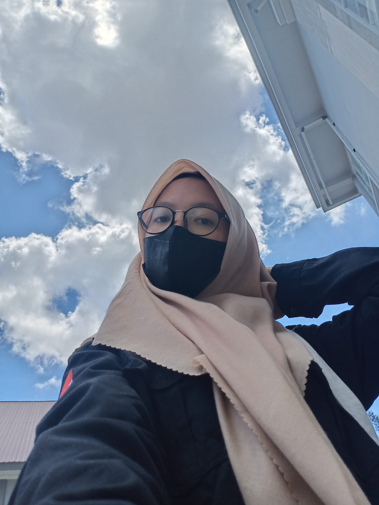

DENGARKAN PODCAST DIMANAPUN & KAPANPUN
Mulai mendengarkan episode-episode seru secara gratis.
Dengarkan Sekarang
Pilih dan dengarkan
Sesuaikan dengan suasana hatimu
Hi there!
I am Sahriah
I am a student majoring in Informatics
at the University of Mulawarman
You can connect with me via
Instagram
